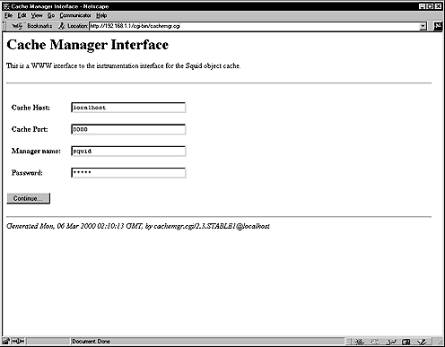

28.10. Optimizing Squid
The atime and noatime attributes can be used to get a measurable performance gain in the Squid cache directory. See General System Optimization in this book, for more information on the subject.
The most important resource for Squid is physical memory. Your processor does not need to be ultra-fast. Your disk system will be the major bottleneck, so fast disks are important for high-volume caches. Do not use IDE disks if you can help it.
28.10.1. The cachemgr.cgi
The cachemgr.cgi utility program, which is available by default when you compile and install Squid into your system, is designed to run through a web interface, and outputs various statistics about Squid configuration and performance. This program is located under the /usr/lib/squid directory, and you must put it in your cgi-bin directory (eg, /home/httpd/cgi-bin) to be able to use it. Follow the simple steps below to use this program.
Move the cachemgr.cgi program to your cgi-bin directory:
I assume your cgi-bin directory is located under /home/httpd/cgi-bin, other paths are possible. Also, this cgi-bin will exist only if you've installed the Apache Web Server on your system.[root@deep /]# mv /usr/lib/squid/cachemgr.cgi /home/httpd/cgi-binOnce you've put the cachemgr.cgi program in your cgi-bin directory, you can point your web browser to the following address http://my-web-server/cgi-bin/cachemgr.cgi to be able to use the various features of this program. The my-web-server is the address where your Apache web server lives, and cachemgr.cgi is the utility program we have just placed in our cgi-bin directory to display information and the configuration of our Squid Linux server.
